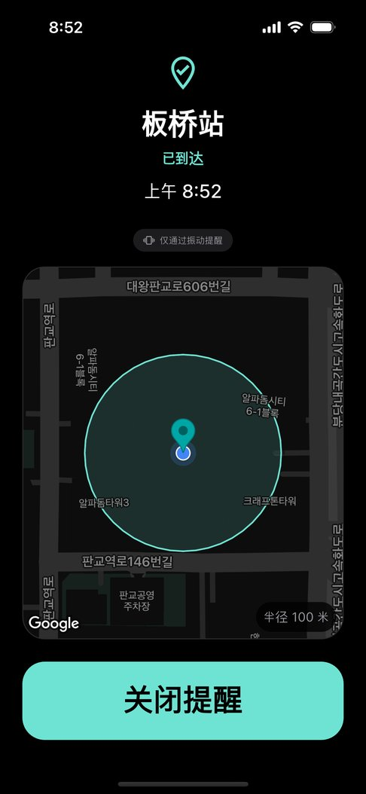
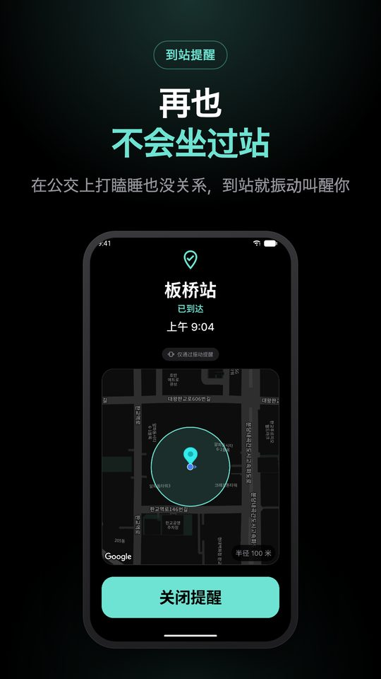
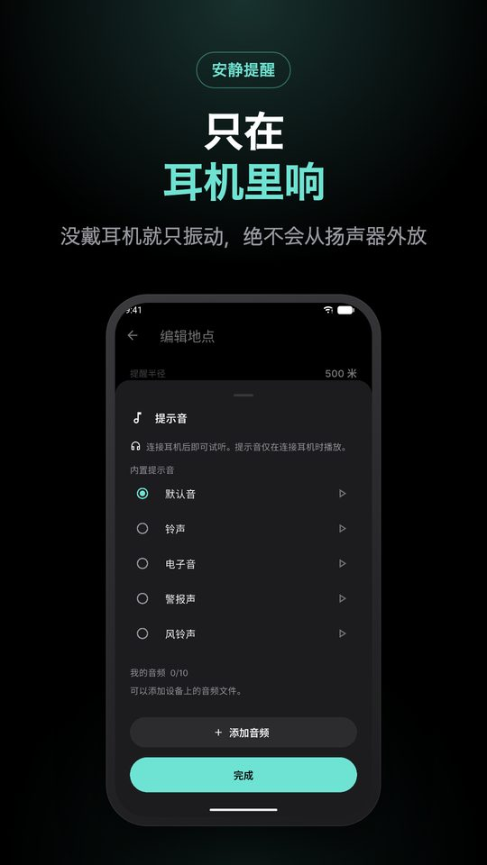
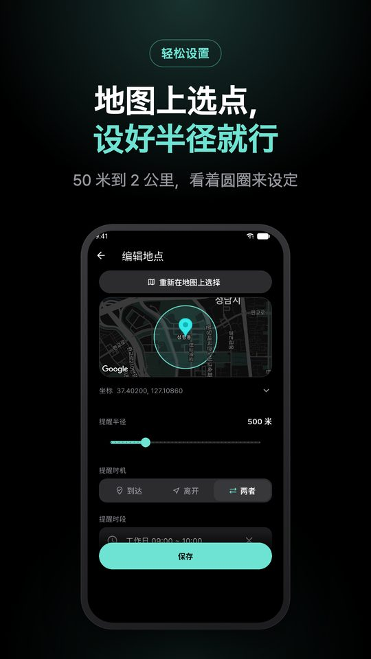
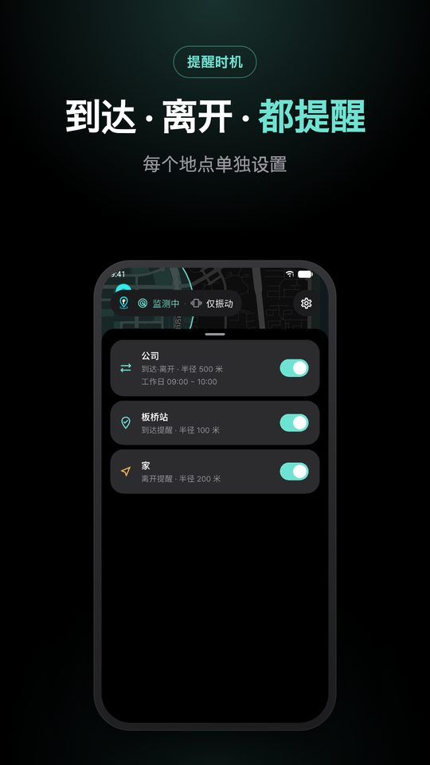
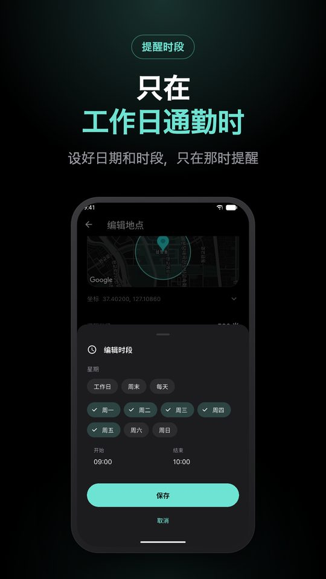
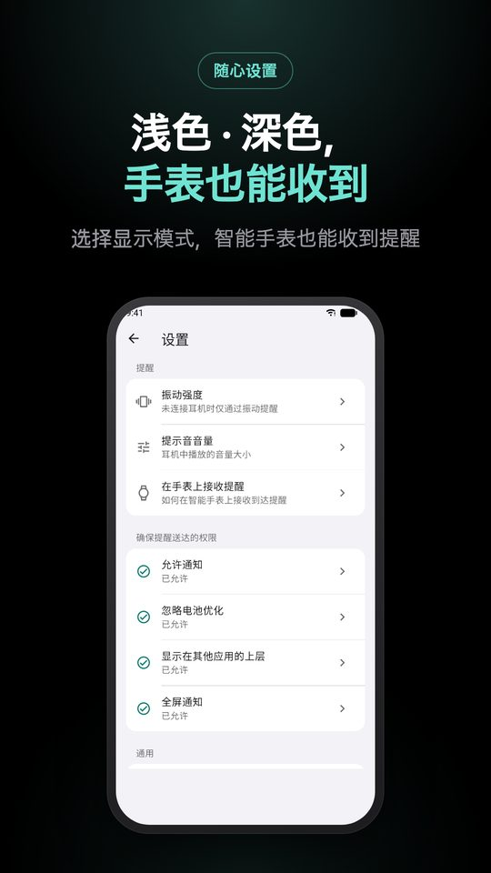

振动提醒，或只用耳机
不错过要下车的地方，
不错过要下车的地方，
安静地 提醒你
你是否在公交上打瞌睡坐过了站？在地图上标记地点，到达时用振动叫醒你。戴着耳机时还会用声音提醒。

iPhone · Android 免费 · 中文 · English · 한국어 · 日本語

你是否在公交上打瞌睡坐过了站？在地图上标记地点，到达时用振动叫醒你。戴着耳机时还会用声音提醒。
iPhone · Android 免费 · 中文 · English · 한국어 · 日本語

在图书馆里扬声器只要响一次，
这个应用就失去了存在的意义。
所以 只有确认连接了耳机后 才会发声。有线、USB-C、蓝牙耳机都一视同仁；确认不了就只振动。车载音响等会外放的设备不在列表中。
只做好一件事：准确提醒。
按名称搜索或移动地图来设定。看着圆圈设置半径，不用猜 100 米有多远。
从 5 种内置声音中选择，或添加自己的音频，听声音就知道到了哪里。
屏幕关闭或在用其他应用时也会提醒，不会一直开着定位。
没戴耳机时振动是唯一的提醒方式。可选弱、中、强三档。
跟随系统或在设置中选择。提醒界面始终保持深色，夜间公交上也不刺眼。
应用会指导你在 Galaxy Watch、Apple Watch 上接收提醒，手腕也能知道已到站。
暗处不刺眼，着急时也不会看错。






可以。在地图上登记要下车的车站，进入该范围的那一刻就会振动叫醒你。即使没有打开应用、屏幕关闭也能工作。
不会。只有确认连接了有线、USB-C 或蓝牙耳机后才会发声。没有连接时只振动，绝不会从扬声器外放。
不会一直开启定位。离地点较远时交给系统的地理围栏，只有靠近时才精确确认，以减少耗电。
不会。到站判断全部在手机里完成，登记的地点和记录只保存在设备上，也无需注册账号。
只要在 Galaxy Watch 或 Apple Watch 上设置接收手机通知，到站提醒也会发到手表。应用的设置 › 在手表上接收提醒 中有说明。
免费。应用含有广告，但正在提醒的界面上不会显示广告。
到站判断全部在手机里完成。不会把坐标或行动记录发送到任何服务器，连开发者也不知道你去过哪里。